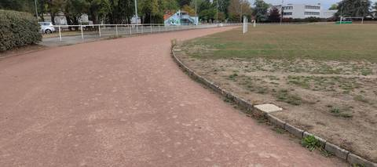
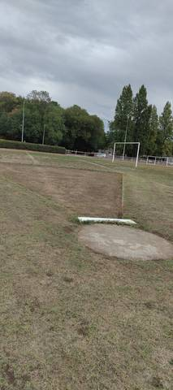
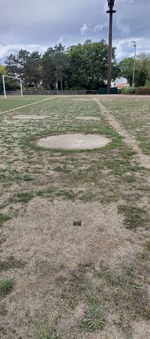
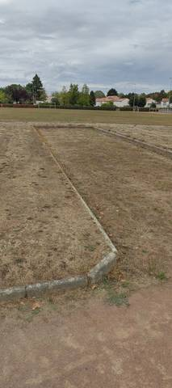
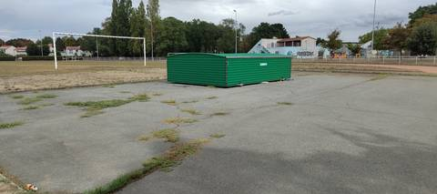
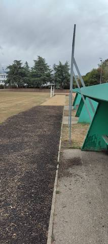

{kind=link}
{kind=link}
{kind=link}
{kind=link}
{kind=link}
{kind=link}
Pas mal du tout, même si c'est en cendrée. Il y a de quoi se garer, et de l'espace sur la piste. J'aime beaucoup ce côté Pays de Retz, avec du vieux béton pour faire les rebords de la piste. L'aire de javelot et celle de poids sont correctes, et le mieux c'est la hauteur. La piste en elle-même n'est pas top, parce qu'aucun couloir n'est défini — mais ça reste un bon complexe dans l'ensemble.
Complexe Sportif de la Croix Jeannette
place Pablo Néruda, 44340 Bouguenais · Loire-Atlantique
Complexe Sportif de la Croix Jeannette est un équipement d'athlétisme situé à Bouguenais (Loire-Atlantique), en Pays de la Loire. Il dispose d'une piste de 400 m en cendrée / stabilisé. On y trouve sautoir longueur, sautoir hauteur, lancer du poids et lancer du javelot. Le site propose l'éclairage, des vestiaires et des douches. L'accès est libre.
Photos






Il manque sûrement une photo
Les sautoirs et les aires de lancer sont ce que la donnée publique décrit le plus mal, et ce qu'on photographie le moins. Un gros plan du sol, une perche bâchée, un bac de sable envahi : chacun ajoute ce qu'aucun champ ne porte.
Envoyer une photoSans compte GitHubPiste
- Revêtement
- Cendrée / stabilisé
- Développement
- 400 m
- Type de piste
- Anneau de stade d'athlétisme
- Configuration
- Plein air
- Mise en service
- 1974
Agrès recensés
- Sautoir longueur
- Sautoir hauteur
- Lancer du poids
- Lancer du javelot
Accès & services
- Accès libre
- Oui
- Éclairage
- Oui
- Vestiaires
- Oui
- Douches
- Oui
- Sanitaires
- Oui
Avis des athlètes
Visite du 27 août 2026. Anneau en cendrée bordé de vieux béton, autour d'un terrain engazonné dont la pelouse était en cours de réfection le jour de la visite : un tour mesuré à 400 m à la montre GPS au ras de la bordure, ce qui conforte le développement déclaré par le ministère. Aucun couloir n'est tracé sur l'anneau. Le recensement ne déclare aucun agrès ici ; il y en a quatre, tous vus sur place. La piste d'élan du javelot est en herbe sèche et débouche sur l'anneau. Le bac de sable du sautoir de longueur est en bon état. Le cercle de poids est en béton, son butoir en place, l'aire de chute en terre. Le sautoir de hauteur est sous une housse rigide DIMA d'aspect neuf, posée sur un plateau de bitume fissuré : le tapis n'a pas été vu sous la housse et les poteaux n'étaient pas installés. Accès libre constaté le jour de la visite, sans portail ni barrière à l'entrée, et du stationnement sur place. L'ensemble est très ancien mais tient la route.
Autres sites du département
- Complexe Sportif de la Neustrie
- Complexe Sportif Bellevue Camus
- Terrain Alain Fournier
- Complexe Leo Lagrange
- Espace Multisports Sensive
- Plaine de Jeux de la Durantiere
Signaler une erreur ou compléter la fiche
Réf. I440200017 · Source : Data ES + communauté — Data ES, ministère chargé des Sports, Licence Ouverte 2.0. Les données sont déclaratives et peuvent être incomplètes : vérifiez les conditions d'accès avant de vous déplacer.